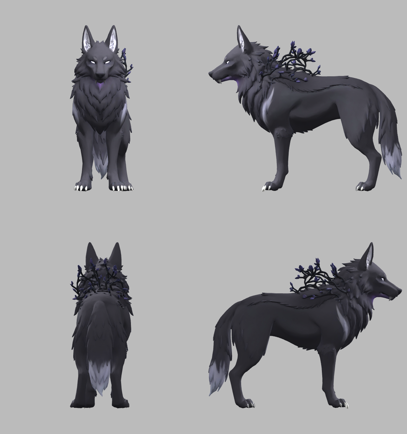

Your export of the third Level I boss, with a four-legged skeleton and 13 moves added by hand. His jaw opens, the bramble mane stands as hackles, and the tail hangs in three parts. His timings are the game's. Pick a move, drag to turn him, and judge the weight and the hit. Nothing in the game has changed.
New in version 4. Every move went through a frame-by-frame audit of every point of the model. It found the forelegs flipping over in one frame in the Pounce and the death, the hind legs passing through each other in the turns, and paws in the floor. Those are fixed, and the fix made the bow truer to your photos: the forearms now lie flat with the elbows down. The table under the moves has the rest.
Idle or Walk sets what he does between attacks, and Going turns him on the spot. An Action plays over it and repeats until you press it again. Hurt plays on top of anything. Death holds him down: press it again and he spawns back in. The bar names the part of the move that is playing, in the game's own words. Enraged is his state under 40 percent health: it stays on over every move until you switch it off, and he stalks faster.

He came through whole: four separate legs with claws, the open mouth with fangs, both ears, the bramble mane with its buds, and the hanging tail with its pale tip. His head measures straight (0.1 degrees). His body sat 2 degrees off line and is squared up in the rig.
| Move | What he does | Timing |
|---|---|---|
| Idle | He never quite stands still: slow breath, the weight eases from side to side, the head swings to scan left and then right with the ears turning first, he lifts his nose to taste the air, licks his teeth, and the tail tip twitches. | 6 s loop |
| Walk | A stalk. Diagonal pairs, as his gait in the game, the hind paw a touch behind its partner. The head rides low and level while the shoulders roll under the mane. | 1.7 u/s, 0.6 s a cycle. Enraged: 2.1 u/s, the same steps played faster. |
| Turn left, turn right | Steps round on the spot in short quick steps on a wider stance, head leading, tail swinging out. | 120° a second (my number: the game turns him instantly). 0.45 s a cycle. |
| Pounce | He bows like a wolf about to spring (your photos): the forepaws reach out one after the other, the forearms lie flat on the floor with the elbows down and the chest low between them, the rump stays high with the tail up and the hips winding from side to side, and his eyes stay level on the hero. He rocks back onto his haunches, the hind paws drive, he sails in an arc, and every paw comes down at once with the forepaws a step ahead while the body squashes. Then he walks out of the landing. | Game: crouch for the first 38 ticks of the 54-tick ring (radius 1.5 u), leap 16 ticks in a 1.1 u arc, land 2.5 frames, landed 3 frames, settle 0.45 s. Here the hero stands 4.5 u away; his range is 2.5 to 8.5 u. |
| Rend | The weight rocks back, the right forepaw comes up high and wide and the lips pull back. He lunges, the paw rakes across and down and the jaw snaps shut. The paw steps home. | Game: wind up for the 36-tick cone (2.8 u long, 55° either side), rake 2.5 frames, held 3 frames, back 0.4 s. |
| Moon Howl | He sits back on his haunches with his tail laid out behind him, the chest fills and the head comes up. The muzzle goes to the sky, the jaw opens and the howl shakes his throat, mane and tail. | Game: rise for the 60-tick ring (radius 3.2 u), cry 2.5 frames, held 3 frames and 0.3 s, settle 0.5 s. It slows the party 35% for 1.5 s, and his next two Pounces come back to back. |
| Call the pack | Standing, he looks back over his left shoulder and gives two short barks with his tail up, then squares up. | Mine: 1.3 s. The game plays only a roar sound when the boars and the owl come at 75, 50 and 25 percent. |
| Enrage | He drops his head and the mane stands. A snarl shudders from the head to the tail, the right forepaw tears at the floor twice, he snaps at the air and squares up. The Enraged state stays on after it. | Game: hackles up 0.35 s, enraged 1.6 s, at 40 percent health. Enraged: hackles stay up, ears pinned, lips back, quick breath, eyes and buds brighter. |
| Hurt | The head flinches away with a snarl, the ears pin, the tail tucks and the mane bristles. Plays on top of any move, so planted paws stay planted. | 0.42 s |
| Heavy hit | Knocked back two steps with his head thrown aside, he catches himself low, shakes his head and squares up snarling. | 1.1 s |
| Spawn | Grows from the floor in a crouch, comes up nose first, shakes the night out of his coat from head to tail, and snaps once at the air. | Game: grow in 7 frames, then stand. The rise, the shake and the snap are mine. |
| Death | A jolt, then he tries one more howl and it dies in his throat. The forelegs slide out and the chest comes down, the hindquarters fold beside him, and the head lays over on the floor. The mane sags and the tail goes slack. | 2.6 s, then he stays down |
A checker takes every point of the model (19,225 of them) through every frame of every move (1,299 frames) and looks for four things. Sizes are in u; he is 2.3 u long.
| Checked | Found in version 3 | Now |
|---|---|---|
| A joint that jumps in one frame (a pop) | Eight, all in the forelegs: the elbow flipped over the top going into the bow (140°) and on landing (153°), and twice as he went down dead (178°). | None. The elbow now keeps to the back and underside of the leg whatever the body does. The fastest thing left is the hind legs' kick at take-off (57° a frame), which is the drive. |
| Any part under the floor | In the bow the forearms were 0.02 u into the floor, and the forepaws 0.02 u as they left it. Forepaws 0.02 u on the Heavy hit, 0.01 u in the Moon Howl. | The Pounce is clean. Still there: a forepaw dips 0.02 u for two frames as the Heavy hit throws him back, and 0.01 u in the Howl. |
| One part pushed through another | 22 overlaps deeper than 0.07 u. The worst: the hind shins passing through each other in both turns (0.09 u), the forelegs up in the neck fur for the whole leap (0.13 u), the tail through the hind legs in the walk and the Hurt (0.10 u), the ears into the mane in the Howl (0.12 u). | 12, and 6 deeper than 0.09 u: the right hind leg folded under the body when he lies dead (0.12 u, hidden under him), the forelegs brushing the chest fur for two frames at take-off (0.13 u), the mane against the back of the head in the Howl (0.11 u). The turns are clean. |
| Smoothness (a move that stops dead, a loop that jumps) | 0 loop jumps. The death's hardest jolt was the foreleg flip. | 0 loop jumps. The death's hardest jolt is a twentieth of what it was. |
| What was measured, on every frame of every move | Result |
|---|---|
| A planted paw moving on the floor (locked feet) | 0 mm in every move, the Pounce's take-off and landing included |
| A planted paw its leg could not reach | 0 mm |
| Loops that jump when they restart (idle, walk, both turns, the enraged state) | 0 |
| Lowest point of the body under the floor | 20 mm at worst, the rim of a planted forepaw as it rolls. Lying dead he is on the floor, not in it (6 mm). |
| Head facing straight | 0.1 degrees off, measured on the model. The body's 2 degrees are taken out. |
| Ears, tail and mane | Run as springs: they trail the body and settle after it stops. The tail swings back to lie on the floor whenever the hips come down, so it never passes through it. |
These numbers come from the model file. I checked the poses as still frames only: the cloud machine cannot play the page at full speed, so the weight, the timing and the hit are yours to judge.